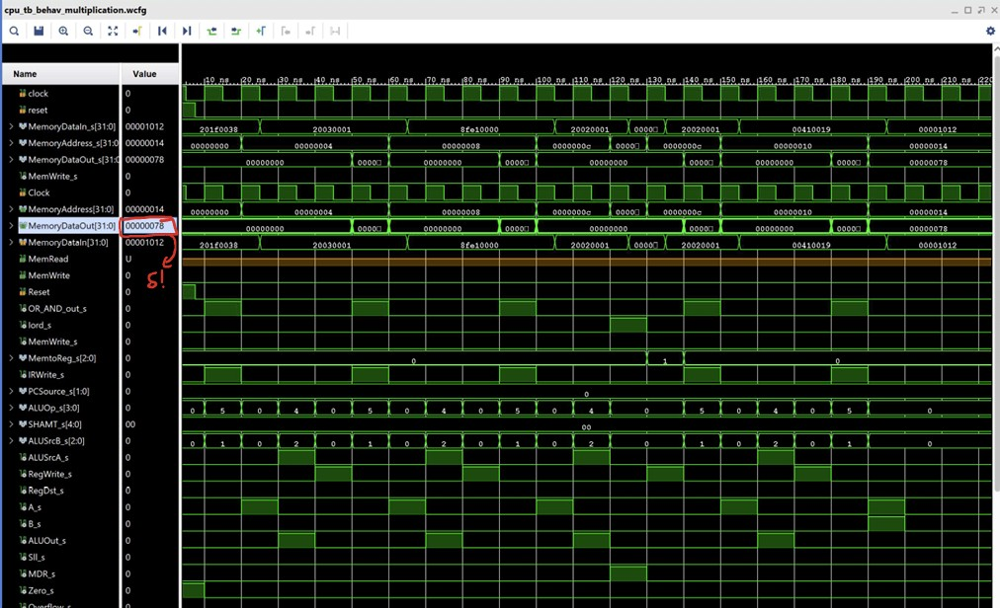

Multi-cycle MIPS32 processor implemented in VHDL with FSM-based control unit, external memory interfacing, and validation on Zynq FPGA hardware.
A complete multi-cycle MIPS32 processor designed from scratch in VHDL, synthesized and validated on Xilinx Zynq FPGA hardware. The project spans RTL design, simulation, synthesis, and hardware testing — covering the full digital design workflow.
mips-elf-gcc, loaded into Zynq BRAM via memory initialization files, and executed on hardware — output verified against expected register dumps.